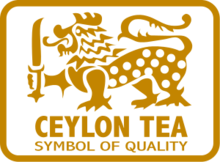

Introduced in 1867, Ceylon Tea has become Sri Lanka's biggest agricultural export and employs about 1 million people directly and indirectly. Approximately 4% of the nation's land area, or close to 203000 hectares, is taken up by tea plantations.
Sri Lanka is a tea-producing island. The nation produces tea all year round, with an annual production of about 340 million kilograms. The central highlands and southern interior regions of Sri Lanka are primarily where tea is grown.
Tea grown in these areas are broadly grouped according to their elevations, with high grown tea sourced from tea plantations found from 1200 m upwards; medium grown tea from estates scattered between 600 m to 1200 m and low grown tea from sea level up to 600 m.
Additionally, the terroir has led to the division of Sri Lanka's tea-growing territories into seven primary regions: Nuwara Eliya, Uda Pussellawa, Uva, Dimbula, Kandy, Sabaragamuwa, and Ruhuna. Since each location has a different height, climate, and topography, each produces a distinctively flavorful Ceylon tea.
Ceylon Tea's distinctive flavor is further influenced by the fact that it is solely hand-picked, primarily using the two leaves and bud method, and that about 93% of the tea produced each year is made using artisanal and traditional methods as opposed to the CTC process used around the world.
Ceylon tea, which has been produced in Sri Lanka for generations, has a unique history and success story. Over two hundred years ago, when Ceylon was still a British colony, the history of Ceylon tea begins. For non-commercial purposes, the British introduced a tea plant to Ceylon in 1824 and planted it in the Royal Botanical Gardens in Peradeniya. In 1839, the East India Company began experimenting with more tea growing by bringing tea plants from Calcutta and Assam.
James Taylor, a Scotsman, started the commercial tea industry in Sri Lanka. He arrived in Sri Lanka in 1852 and made Loolecondera estate in Kandy his permanent residence. In 1866, Taylor traveled to India to understand the fundamentals of cultivating tea on plantations. On 1867, after his return, he began a 19-acre tea plantation in the Loolecondera estate. Soon after Loolecondera was created, nearby plantations like Hope, Rookwood, and Mooloya started to change into tea estates and were among the first ones to be established on the island. In the Loolecondera estate, Taylor opened a fully functional tea industry in 1872. Taylor was successful in delivering the first supply of Ceylon tea to the London tea auction in 1875.
The first clonal tea fields were planted in 1955, and the Tea Research Institute was founded in 1925 to study ways to increase yields and production techniques. By the 1960s, there were more than 200,000 hectares of tea cultivation land and 200,000 metric tons of tea exports. Sri Lanka first surpassed China as the world's top exporter of tea in 1965.
The first online tea sales, conducted by Forbes & Walker Ltd. at the Colombo Tea Auctions, started in 2001. In Kandy, a tea museum opened its doors in 2002. Sri Lanka produced more tea than 340,000 metric tons in 2013.
The majority of the tea produced in the nation is currently exported as Ceylon Black Tea, while the nation also makes Ceylon Green Tea, a kind created from Assamese seedlings. Silver and golden tips of Ceylon White Tea, one of the most costly tea kinds in the world, are renowned for having the greatest flavor.
The Camillea Sinensis plant can be used to produce four different types of tea. The same type of plant is used to make all types of tea, but the soil and climate affect how each plant tastes. There are five different elevations in Sri Lanka where tea is grown. The tea produced in each region has a somewhat different flavor.
Black Tea
- English Breakfast
- English Afternoon
- Irish Breakfast
- Earl Grey
- Lapsang Souchong
- Spiced Tea
- Rose and French Vanilla
- Black tea with berries
Green Tea
- Real Leaf Green Tea
- Jasmine Green Tea
- Mint Green Tea
- Lemongrass Green Tea
White Tea
- Real White tea
- Ceylon Silver Tips
- White Litchee handrolled tea
- Jade Butterfly handmade white
Flavoured Tea
The ISO 3720 minimum standard is used for the products, and Ceylon Tea maintains the finest quality in the world tea market. With the least amount of pesticide residue, the nation is capable of producing the cleanest tea in the entire globe. In 2012, methyl bromide was eliminated from the manufacturing process. Additionally, Ceylon Tea complies with the exacting ISO 22000 series standards as well as the European Community's rules for health and safety.Additionally, Sri Lankan tea growers have partnered with organizations that support fair trade, such as the Ethical Tea Partnership, the Rainforest Alliance, Ozone Friendly Tea, Carbon Neutral Certification, and NASAA.
In addition to loose leaf tea, Ceylon Tea is produced and processed in a variety of ways, with value-added products accounting for over 50% of tea exports. The main value-added tea products produced in Sri Lanka are green tea, flavorings, organic tea, instant tea, and ready-to-drink tea.
In recent years, Sri Lanka has expanded its product line with tea-based items including soap, bath gels, shampoo, and cosmetics by utilizing its enormous research facilities for tea.
A worldwide campaign has been launched by the Sri Lanka Tea Board (SLTB) with the goal of conserving and promoting the legacy of Ceylon Tea on a global scale. Russia, Ukraine, Japan, China, Australia, the United States of America, Germany, Saudi Arabia, the United Arab Emirates,Chile,Iran and Turkey are among the more than 12 nations targeted by this advertising campaign.


Major Markets - Ceylon Tea Sector - 2021
- Iraq (US$ 136.78 million)
- Turkey (US$ 128.95 million)
- Russia (US$ 114.85 million)
- UAE (US$ 103.55 million)
- Iran (US$ 70.43 million)
- China (US$ 60.37 million)
- Azerbaijan (US$ 47.11 million)
- Libya (US$ 45.85 million)
- Saudi Arabia (US$ 45.02 million)
- Syria (US$ 37.01 million)